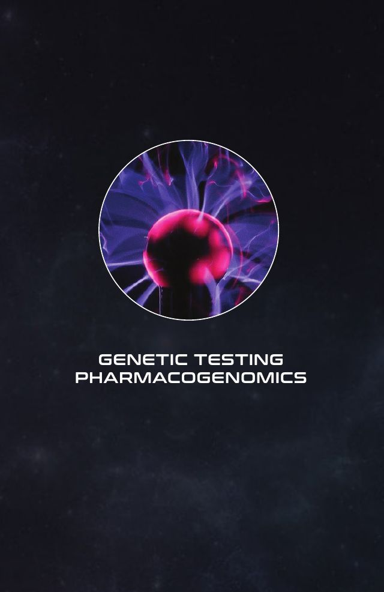
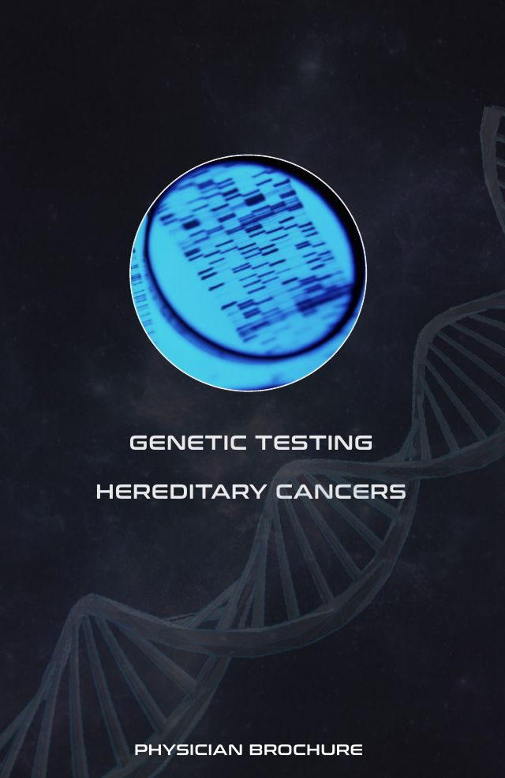
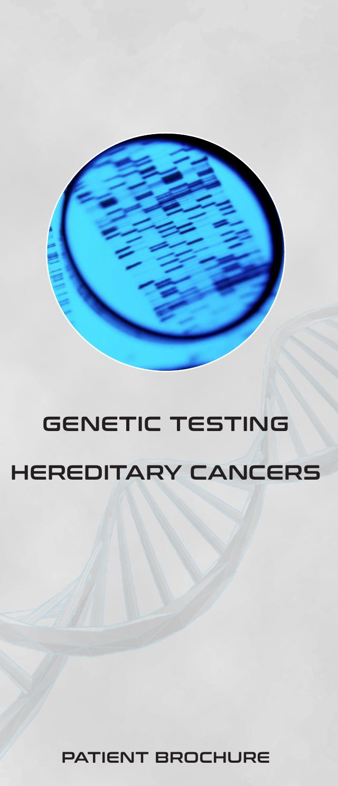
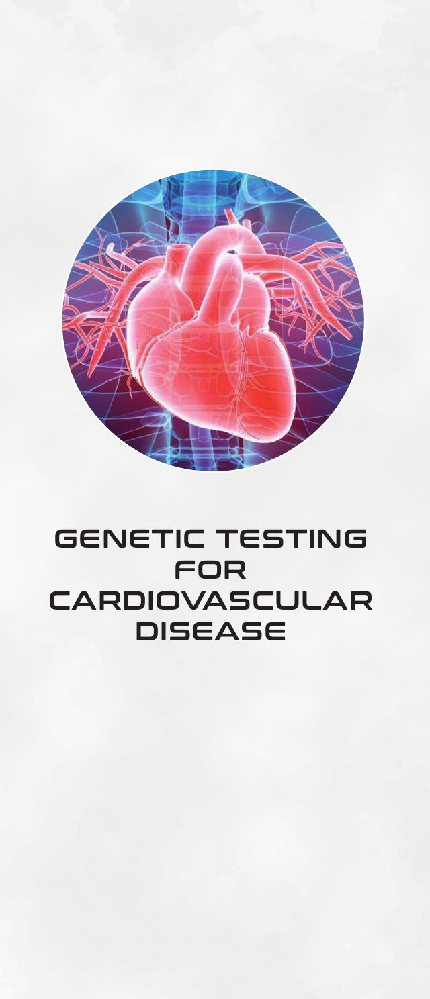
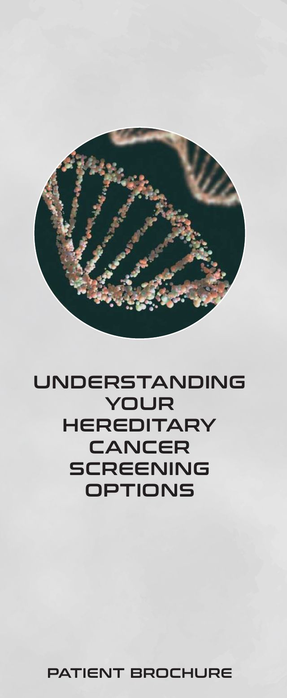
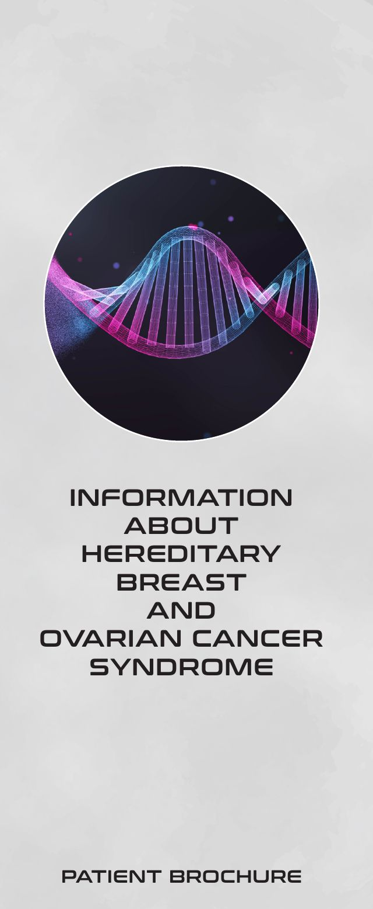

The brochures our reps carried into physician offices. I wrote every word.
As COO of ATCG, a CLIA high-complexity clinical genetics lab in Irvine, California, I built the field team's in-office collateral from a blank page: the copy, the structure and the art direction, working alongside a production designer. Reps used these pieces in primary care and specialty offices to sell pharmacogenomic, hereditary cancer, cardiac and carrier screening tests. The goal was to win the patient samples a practice was sending nowhere, or sending to a national lab.
"Is this going to mean more work for me and my staff?"
That was the first question in almost every office. Physicians don't have time to become genetics experts, and they already answer for plenty. So the collateral was split by reader. The physician pieces explain the science and keep ordering to four steps. The patient pieces tell patients to bring every question about the test to the lab and its genetic counselors, not to their provider. The provider's only job is to discuss results, and the reports were designed so those conversations stay simple.
Inform
Give physicians and patients a clear picture of what each test finds and who it's for.
Sell
Show the practice how testing fits its patients and its workflow, and make the first order easy.
Support after onboarding
Stay in the waiting room and the exam room so patients arrive informed and the staff isn't fielding questions.
Six pieces, one system
Two physician brochures and four patient brochures, sharing the same type, layout and circular hero image so whatever a rep left at the front desk looked like it came from one lab. Every piece below has a "Read the copy" panel with the full text at a size you can read on a phone.

PhysicianPharmacogenomics
PhysicianHereditary cancer
PatientHereditary cancers
PatientGenetic testing for cardiovascular disease
PatientUnderstanding your hereditary cancer screening options
PatientHereditary breast and ovarian cancer (HBOC)Pharmacogenomics
For prescribers. Less trial, more precision: who the test is for, what it changes in prescribing, a four-step ordering process and which panel to order. The back half covers malignant hyperthermia, a second test sold off the same requisition.
Read the copyFull text, sized for a phone
Less trial, more precision
Who is this test for?
Indications for PGX testing include: use of medications with known polymorphisms (examples include: cardiology, anti-thrombotic, pain, and psychiatric medications), patients on multiple medications (one of which is a medication with known polymorphisms), and patients who have experienced treatment failure, side effects, or toxicity during use of a medication with known polymorphisms.
What are the potential benefits for my patient?
Moving beyond trial and error, PGX testing may allow for a more precise and customized treatment plan for your patients. The results provide details about how your patient metabolizes medications and suggests alternative prescriptions when increased sensitivity or reduced response is likely.
By examining the role genetics play in drug metabolism, you can help treat your patients more effectively by identifying genetic variants and prescribing medications accordingly. Treatment plans may be customized and you can offer truly personalized medicine that is unique to each one of your patients.
Make testing a standard in your practice today.
Test selection
- Comprehensive Panel
- Pain Management Panel
- Cardiology and Thrombophilia Panel
- Mental Health Panel
Drug response is not the same for all people. ATCG’s Pharmacogenetic test can identify people in all areas of the traditional bell curve, including non-responders and those at risk for adverse drug reactions.
Our process
- Complete test requisition formsRequest printed or digital forms from Client Services.
- Saliva sample collectionBuccal swab or oral collection kits. Request swabs and kits from Client Services.
- Get results quicklyOur CLIA accredited laboratory will deliver results in less than a week to a HIPAA electronic portal.
- Plan and preventThe finished report will be interpreted so the data can be clearly utilized by the clinician. A sample report is available on request.
Why ATCG?
- Spectrum
- Customized testing for your patients allowing truly personalized medicine
- Advanced
- Helping you and your patients stay progressive in the universe of cancer
- Workflow
- Electronic ordering and reporting portals streamline workflow for seamless adoption
- Engage
- We are committed to tests that produce actionable information that truly makes a difference
Malignant hyperthermia susceptibility (MHS) testing
Malignant Hyperthermia is identified as an autosomal dominant pharmacogenetic trait. This is an inherited condition which, when exposed to drugs primarily used for general anesthesia, causes a severe and sometimes fatal reaction.
Who is this test for?
This condition mostly occurs during or after surgery. However, it can occur wherever anesthetic medications are used, which include: emergency rooms, dental offices, surgeons’ offices, and intensive care units. The majority of patients who carry the genetic variant for MH will never develop symptoms. Identifying patients should include: family history of MH, unknown family history or gaps in family tree, a history of heat stroke or hyperthermia after exercise, muscle abnormalities that are linked to MHS (example: Duchenne and Becker Muscular Dystrophy). Other common conditions associated are respiratory acidosis, metabolic acidosis, and excessive heat production.
What are the potential benefits for my patient?
Prevention of Malignant Hyperthermia can be achieved by performing genetic testing. Healthcare professionals who familiarize themselves with genomic information can help identify patients and family members who are high risk. This disorder and its severe complications can be mitigated with the MHS panel diagnostic test.
The advantage of using this genetic test as opposed to a contracture test are reduced invasiveness, lower cost and lack of morbidity from a muscle biopsy. The innovations in genetics yield tests that are inexpensive, noninvasive, and quick, which could pave the way to eliminate malignant hyperthermia altogether.
Make testing a standard in your practice today.
Our process
- Complete test requisition formsThe MHS panel can be ordered from the Pharmacogenomic Test Requisition form, available from Client Services.
- Saliva sample collectionIf a PGX test is ordered, please use an additional oral collection swab for the MHS panel. Sample requirements, PDF instructions and a video are on the lab’s website.
- Get results quicklyOur CLIA accredited laboratory will deliver results in less than 3 weeks to a HIPAA electronic portal.
- Plan and preventGenetic Counselors will help you and your patient interpret results and choose the best prevention options.
Test selection
- Malignant Hyperthermia Susceptibility Panel
References and resources
- Malignant Hyperthermia Association of the United States
- National Institute of Arthritis and Musculoskeletal and Skin Diseases
- National Organization for Rare Disorders
Hereditary cancer
For physicians. Which patients with a family history should be screened, what a result changes in their care, and an ordering process short enough that it doesn't add to the staff's day.
Read the copyFull text, sized for a phone
Early detection is the best defense
Some of the most prevalent hereditary cancers have much higher survival rates when diagnosed early. ATCG’s Hereditary Cancer Solution provides knowledge that can assist with prevention and early detection.
Who is this test for?
Patients with a personal or family history suggestive of a hereditary cancer syndrome. Red flags for hereditary cancers can include onset of cancer before age 50, more than one primary cancer in a single person, or multiple affected people within a family. This test is designed to detect germline pathogenic variants and is not validated to detect somatic mutations.
Characteristics of hereditary cancer: early onset, multiple family members affected, rare cancers, multiple body parts affected.
What are the potential benefits for my patient?
Hereditary cancer testing can establish or confirm a diagnosis, identify risks for other cancers and health conditions, help define the best management plan for patients with a positive test result (including increased surveillance, pharmacological treatments, and prophylactic surgeries), and determine whether close family members (children, siblings, and parents) may also be at risk. If a pathogenic variant is identified in your patient, their close relatives can have as high as a 50 percent risk of carrying the same variant and therefore also be at risk for cancer.
By examining the role genetics play in the development of cancer, you can steer your patients’ futures towards the long lives you imagine for them. Implement proactive measures and establish new treatment protocols for your patients.
Make testing a standard in your practice today.
Test selection
- Focus Panel
- Breast and Ovarian Panel
- Prostate Panel
- Gastroenterology Panel
- Lynch Panel
Our process
- Complete test requisition formsRequest printed or digital forms from Client Services.
- Saliva sample collectionSample requirements, PDF instructions and a video are on the lab’s website.
- Get results quicklyOur CLIA accredited laboratory will deliver results in less than 3 weeks to a HIPAA electronic portal.
- Plan and preventGenetic Counselors will help you and your patient interpret results and choose the best prevention options.
Why ATCG?
- Spectrum
- Customized testing for your patients allowing truly personalized medicine
- Advanced
- Helping you and your patients stay progressive in the universe of cancer
- Workflow
- Electronic ordering and reporting portals streamline workflow for seamless adoption
- Engage
- We are committed to tests that produce actionable information that truly makes a difference
Hereditary cancers
For the waiting room. Why knowing an inherited cancer risk early matters, what the test involves, and that the lab and its genetic counselors carry the follow-up, not the front desk.
Read the copyFull text, sized for a phone
Early detection is the best defense
Some of the most prevalent hereditary cancers have much higher survival rates when diagnosed early. ATCG’s Hereditary Cancer Solution provides knowledge that can assist with prevention and early detection.
Our process
- QualificationYour physician will help determine which test is medically necessary. A genetic counselor can also be utilized by your doctor to aid in this assessment.
- Collect DNASimple, painless saliva sample is collected and then sent to the lab for testing.
- Analyze resultsOur CLIA Certified laboratory analyzes the DNA and reports results to your physician in 2-3 weeks.
- PlanA clear report and genetic counseling services are provided by the lab to help your doctor and YOU discuss all options.
Statistics
Five-year survival
Source: American Cancer Society
The hereditary cancer test
The Hereditary Cancer Test can empower you to change the course of cancer. Testing can help evaluate a genetic predisposition for cancer. This means you and your doctor can take proactive steps to decrease your risk and inform other family members about their risks. If cancer runs in your family, it’s better to find out sooner rather than later.
Knowledge is power
To change your future you must know what the future holds and steer your life in another direction. If you have a family history of cancer, or already had cancer, taking the test to establish if you carry an inherited cancer mutation can determine how closely you should be monitored with screenings and exams as well as help shape future treatment. It can also aid in determining your risk for other cancers and any pertinent medical management options.
Genetic testing for cardiovascular disease
For patients. Inherited heart conditions, the four steps from saliva sample to plan, and the wallet-size QR patient card that keeps results with the patient.
Read the copyFull text, sized for a phone
Early detection is the best defense
According to the American Heart Association, an estimated 80% of cardiovascular disease, including heart disease and stroke, is preventable. ATCG’s Hereditary Cardio Solution provides knowledge that can assist with early detection and prevention.
Our process
- QualificationYour physician will help determine which test is medically necessary. A genetic counselor can also be utilized by your doctor to aid in this assessment.
- Collect DNASimple, painless saliva sample is collected and then sent to the lab for testing.
- Analyze resultsOur CLIA Certified laboratory analyzes the DNA and reports results to your physician in 2-3 weeks.
- PlanA clear report and genetic counseling services are provided by the lab to help your doctor and YOU discuss all options.
If your test results are “Pathogenic” or “Likely Pathogenic”, ATCG gives you the option to have your report sent to you directly.
ATCG’s Patient Card is our way of helping you take action by sending you a QR code that’s the size of a credit card, so that your information is available to you and any doctor you see with no delays. The QR code is for your privacy and is HIPAA compliant.
Statistics
Source: CDC
The hereditary cardio test
The Hereditary Cardio Test can empower you to change the course of cardiovascular disease. Testing can help evaluate a genetic predisposition for cardiovascular disease. This means you and your doctor can take proactive steps to decrease your risk and inform other family members about their risks. If cardiovascular and other heart related diseases run in your family, it’s better to find out sooner rather than later.
Knowledge is power
To change your future you must know what the future holds and steer your life in another direction. If you have a family history of cardiovascular diseases, or already have a cardiovascular disease or heart condition, taking the test to establish if you carry an inherited mutation can determine how closely you should be monitored with screenings, intervention prescription drugs, and exams, as well as help shape future treatment. It can also aid in determining your risk for other cardio related diseases and any pertinent medical management options.
Understanding your hereditary cancer screening options
The long-form patient piece. Starts from what cancer is, walks through inherited risk and the warning signs in a family history, and explains what a positive or negative result does and doesn't mean.
Read the copyFull text, sized for a phone
What is cancer?
Cancer is a class of disease where there is uncontrolled growth of abnormal cells in the body. Cancer develops when the body’s normal process of cell growth goes wrong and new cells form when the body doesn’t need them and old or damaged cells do not die as they should. Buildups of these abnormal cells often invade healthy cells and may form a mass of tissue, called a lump, growth or tumor.
There are some cancers, like leukemia, cancer of the blood that does not form tumors. They grow in the blood cells or other cells of the body.
Cancer is not just one disease
There are many types of cancer. It’s not just one disease. Cancer can start in the lungs, breast, colon, or even in blood. Cancer cells can also spread to other parts of the body. For instance, cancer cells in the lung can travel to the bones and grow there. When cancer cells spread, it’s called metastasis. When lung cancer spreads to the bones, it’s still called lung cancer. It’s not called bone cancer unless it started in the bones.
Cancer and genetics
Cancers that run in families can be caused by an abnormal gene that is passed from generation to generation. Although this is often referred to as inherited cancer, what is inherited is the abnormal gene that can lead to cancer, not the cancer itself. Only about 5 to 10% of all cancers are thought to result directly from gene defects or mutations inherited from a parent.
Gene mutations can be inherited or acquired
An inherited gene mutation is present in the egg or sperm cell that formed the child and is passed down through generations. An acquired gene mutation does not come from a parent, but is acquired some time later. It starts in one cell, and then is passed on to any new cells that are created from that cell. This kind of mutation is not present in egg or sperm cells, so it is not passed on to the next generation. Acquired mutations are much more common than inherited mutations. Most cancers are caused by acquired mutations.
Risk factors
Certain things make it more likely that cancers in a family are caused by a family cancer syndrome, such as:
- Many cases of the same type of cancer, especially if it is an uncommon or rare type of cancer.
- Cancers occurring at younger ages than usual such as colon cancer in a 20-year-old.
- More than one type of cancer in a single person such as a woman with both breast and ovarian cancer.
- Cancers occurring in both of a pair of organs like both eyes, both kidneys, or both breasts.
- More than one childhood cancer in siblings for example sarcoma in both a brother and a sister.
- Cancer occurring in the gender not usually affected such as breast cancer in a man.
- Cancer occurring in many generations, like in a grandfather, father, and son.
When trying to determine if cancer might run in your family, first gather some information. Look at:
- Who has the cancer? How are you related? Which side of the family are they on (mother’s or father’s)?
- What type of cancer is it? Is it rare?
- How old was this relative when they were diagnosed?
- Did this person get more than one type of cancer?
- Did they have any known risk factors for their type of cancer (such as smoking for lung cancer)?
ATCG laboratories inherited cancer screening panels
- Breast and Ovarian Cancer – 8 genes ATM, CDH1, PALB2, STK11, TP53, PTEN, BRCA1, BRCA2
- Gastroenterology Cancer - 14 genes APC, BRCA1, BRCA2, CDH1, EPCAM, MLH1, MSH2, MSH6, MUTYH, PALB2, PMS2, PTEN, STK11, TP53
- Lynch Syndrome - 5 genes EPCAM, MLH1, MSH2, MSH6, PMS2
- Prostate Cancer – 10 genes ATM, BRCA1, BRCA2, CHEK2, EPCAM, MLH1, MSH2, NBN, PMS2, TP53
- Cancer Focus Panel – 27 genes linked to Breast, Ovarian, Endometrial, Colorectal, Lynch Syndrome, Gastric, Melanoma, Pancreatic, Polyposis, Prostate, Renal, Thyroid/Parathyroid, Uterine and other major cancers ABRAXAS1, ATM, APC, BARD1, BRIP1, CDH1, CHEK2, EPCAM, MLH1, MRE11A, MSH2, MSH6, MUTYH, NBN, PALB2, PIK3CA, PMS2, PTEN, RAD50, RAD51C, RAD51D, STK11, TP53, XRCC2, PMS2CL
Mutations in each gene may be rare when evaluated individually, however they collectively account for a significant amount of hereditary cancer susceptibility. This panel may be appropriate in a number of scenarios, particularly if the family history shares features of several different hereditary cancer syndromes with multiple cancer types.
Examples of hereditary cancer syndromes
Breast Cancer is the most common cancer in women in developed countries, affecting about 1 in 8 (12.5%) women in their lifetime. The National Cancer Institute (NCI) estimates that approximately 231,840 new cases of female breast cancer and 2,350 new cases of male breast cancer will be diagnosed in the U.S. in 2017.
The majority of breast cancers are sporadic, but 5-10% are due to inherited causes. Hereditary breast cancer tends to occur earlier in life than non-familial cases and is more likely to occur in both breasts. The BRCA1 and BRCA2 genes appear to be responsible for ~half of hereditary breast cancer. However, additional genes are associated with increased breast cancer risk as well. Mutations in the genes included in the Comprehensive Panel can confer an estimated 20–87% lifetime risk for breast cancer. Some of these genes are associated with increased risks for other cancers, such as pancreatic cancer with PALB2, ovarian cancer with BRCA1, BRCA2, RAD51C, and sarcoma with TP53.
Ovarian Cancer is the fifth most common cancer among women in developed countries, affecting approximately 1 in 71 (1.4%) women in their lifetime. The NCI estimates that approximately 21,290 new cases of ovarian cancer will be diagnosed and 14,180 ovarian cancer deaths will occur in the U.S. in 2017. BRCA1 and BRCA2 are the most common causes of hereditary ovarian cancer, but several other genes are associated with increased ovarian cancer risk as well.
Colorectal Cancer (CRC) affects about 1 in 20 (5%) men and women in their lifetime. The NCI estimates that ~132,700 new cases will be diagnosed and ~49,700 CRC deaths will occur in the U.S. in 2017. Lynch syndrome is the most common form of hereditary CRC, but other genes on the Panel are also associated with increased CRC risk.
Uterine Cancer affects about 1 in 38 (2.6%) women in their lifetime. The NCI estimates that approximately 54,870 new cases of uterine cancer will be diagnosed and ~10,170 uterine cancer deaths will occur in the U.S. in 2017. Increased risk for uterine cancer has been identified in a number of hereditary cancer syndromes, including Lynch syndrome and Cowden syndrome.
Prostate Cancer is the second most common cancer in men in the United States, after skin cancer. The NCI estimates that approximately 180,890 new cases of prostate cancer will be diagnosed in the U.S. in 2017. Hereditary prostate cancer may be diagnosed at younger ages and may also be more aggressive. For example, BRCA1 and BRCA2 gene mutations have been shown to be associated with more aggressive prostate cancer.
What do my test results mean?
Testing does not tell you if you currently have cancer. Your test results tell you about your inherited risk of having breast and ovarian cancer, or other cancers.
A negative test result means that you do not have a gene mutation in what were evaluated in the Gene Panel Testing. Although the gene test can detect the majority of mutations:
- You could have a gene mutation or type of mutations that the test wasn’t targeted to detect.
- Or if your family carries a high-risk gene mutation that researchers haven’t yet identified then the test would not be able to detect this gene mutation and you could be a carrier.
A negative test result does not eliminate the chance of developing non-hereditary cancer. You may have the same cancer risk as that of the general population.
A positive test result means that you have a gene mutation that is associated with cancer. A positive test result does not mean that you have cancer or that you will certainly have cancer. A positive test result tells you that you have a higher risk of developing cancer compared with someone who does not have the mutation.
Hereditary cancer mutations can be passed on in a family
- If you have a mutation in one of these genes, your parents, your children, and your brothers and sisters have a chance that they have the same mutation.
- Other relatives may be at risk to carry the same mutation. Testing is the only way to accurately identify mutation carriers.
- It is important to share test results with family members.
- Individuals may differ in their viewpoints and reactions to genetic testing.
Cancer risk management
Options for reducing cancer risk are available whether or not you have already had a diagnosis of cancer and/or polyps (adenomas). Your healthcare providers will discuss your testing options and medical management options for reducing risk such as Increased Surveillance, Surgical Management, and Chemoprevention.
Hereditary breast and ovarian cancer (HBOC)
For patients. How HBOC passes through families, what BRCA1 and BRCA2 mean for women and men, and how to talk with relatives about a result.
Read the copyFull text, sized for a phone
What is hereditary breast and ovarian cancer (HBOC) syndrome?
HBOC syndrome is an inherited genetic condition. This means that the cancer risk is passed from generation to generation in a family. If you have HBOC syndrome, you carry a gene mutation you inherited from your father or your mother, or sometimes from both parents, that significantly increases your risk for certain cancers. Hereditary Breast and Ovarian Cancer (HBOC) syndrome can be inherited from either the father’s side or the mother’s side of the family.
What causes HBOC?
BRCA1 and BRCA2 (BReast CAncer genes 1 and 2) are the most well-known genes linked to breast cancer risk and are associated with the majority of HBOC families. BRCA1/2 mutations can be passed to you from either parent and can affect the risk of cancers in both women and men. Inherited mutations of either the BRCA1 or the BRCA2 gene causes about 10% of breast and ovarian cancers. A mutation or alteration in either BRCA1 or BRCA2 increases a woman’s lifetime risk of developing breast and ovarian cancers. A person with BRCA1/2 mutations not only has a higher risk of developing these cancers, but also may pass that gene mutation on to his or her children. Men with these gene mutations also have an increased risk of breast cancer and prostate cancer. Not all families with multiple cases of breast and ovarian cancer have mutations in BRCA1 or BRCA2.
How common is hereditary breast and ovarian cancer?
Like other gene mutations, BRCA1/2 mutations are rare in the general population. Women in the general population have about an 8% chance of getting breast cancer by age 70 and about a 12% chance by age 85. Current estimates are less than 1% of the general population has a BRCA1/2 mutation.
BRCA1 and BRCA2 gene mutations and ethnicity
Among Ashkenazi Jewish men and women, about one in 40 have a BRCA1/2 mutation. Approximately 1 in 10 women with breast cancer and 1 in 3 women with ovarian cancer in Ashkenazi families have BRCA1/2 mutations. The table below shows how the prevalence of BRCA1/2 mutations varies among breast cancer survivors from different ethnic groups in alphabetical order.
| Ethnicity | BRCA1 | BRCA2 |
|---|---|---|
| African-American | 1% | 3% |
| Ashkenazi Jewish | 8-10% | 1% |
| Asian-American | Less than 1% | Data not available |
| Caucasian (non-Ashkenazi Jewish) | 2-3% | 2% |
| Hispanic | 4% | Data not available |
Factors that increase inherited risk for cancer
Many people are unaware of their inherited risk, though they may be aware of a cancer history in their family. You should consider talking with a doctor about genetic testing for hereditary breast and ovarian cancer (HBOC) syndrome if at least one of the following applies to you or your family:
- Breast cancer before age 50
- One or more relatives diagnosed at age 45 or younger
- Two or more relatives who’ve had breast cancer
- A male relative who’s had breast cancer
- Breast cancer in both breasts or twice in the same breast
- Being in a family of Ashkenazi or Eastern European Jewish ancestry
- Ovarian cancer at any age
- A family member with a BRCA1/2 mutation or mutations in other related breast cancer risk genes
- A history of breast cancer, ovarian cancer, prostate and/or pancreatic cancer on the same side of the family
Cancer risks for women with BRCA1/2 mutation
- Lifetime risk of breast cancer: 50% to 85%
- Risk of breast cancer before age 50: 30% to 50%
- Lifetime risk of ovarian cancer:
- BRCA1 gene mutation: 25% to 50%
- BRCA2 gene mutation: 15% to 30%
- Developing a second breast cancer: 40% to 60%. The risk of breast cancer occurring in the other breast rises approximately 2% to 3% per year.
BRCA1/2 mutations and cancer in men
Men can also have BRCA1/2 mutations and may pass them on to their children.
- Lifetime risk of breast cancer
- BRCA1 gene mutation: 1% to 2%. This is a 10-fold increase over the general population.
- BRCA2 gene mutation: 6%
- Risk of prostate cancer
- BRCA1 gene mutation: some increased risk.
- BRCA2 gene mutation: 20%
- Men with a BRCA2 gene mutation have a significantly increased risk of developing more aggressive prostate cancer before age 65 and therefore screening should begin at age 40.
Screening for BRCA1/2 gene mutations
The BRCA gene test is most often a saliva or blood test. Your test sample is collected in your doctor’s office and sent to a laboratory for DNA analysis. It takes 2-4 weeks before test results are available. Your doctor or genetic counselor will contact you with your test results, discuss their implications and go over your options. Federal and state laws help ensure the privacy of your genetic information and protect against discrimination in health insurance and employment.
What do the test results mean?
Testing does not tell you if you currently have cancer. Your test results tell you about your inherited risk of having breast and ovarian cancer.
A negative test result means that you do not have a BRCA1 or BRCA2 gene mutation. Although the BRCA gene test can detect the majority of mutations in the BRCA1 and BRCA2 genes:
- You could have a gene mutation that the test wasn’t able to detect.
- Or if your family carries a high-risk gene mutation that researchers haven’t yet identified then the test would not be able to detect this gene mutation and you could be a carrier.
A negative test result does not eliminate the chance of developing a non-hereditary breast cancer. You still have the same cancer risk as that of the general population.
A positive test result means that you have a BRCA1 or BRCA2 gene mutation. A positive test result does not mean that you have cancer or that you will have cancer. Having the BRCA1/2 mutations does not mean that you will get breast cancer. Many women with a BRCA1/2 mutation will never have breast cancer.
A positive test result tells you that you have a much higher risk of developing breast cancer or ovarian cancer compared with someone who does not have the mutation. A positive test result helps you to better understand your personal risk of developing breast and ovarian cancers. You can then make choices on what to do to reduce your risk and about what follow up care is right for you.
Should I talk with my relatives about my result?
You are encouraged to share these results with your relatives. It is normal to feel some anxiety about this. But knowing this information may help your relatives understand their own future risk of developing cancer, which may help them prevent a cancer or detect it early.
Follow-up care after a positive test result
You might choose to take specific measures to reduce your cancer risk. What you choose to do depends on many factors, including your age, medical history, prior treatments, past surgeries and personal preferences. You and your healthcare provider will discuss your options for medical management.
Need someone who can build the field playbook and write what goes in the bag?
I've done it for orthopedic devices, a clinical lab and benefits programs. Happy to walk through how any of these pieces were used in the field.